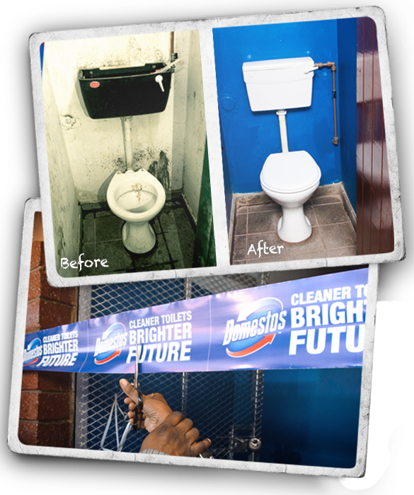
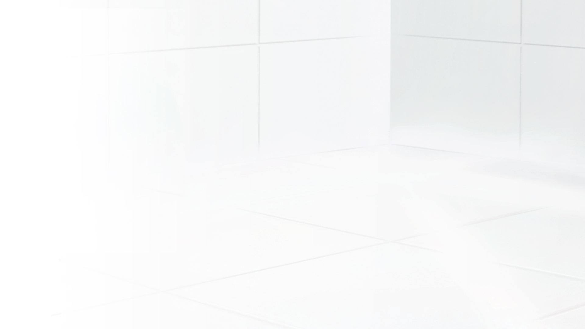

Blast away germs and keep your family safe with South Africa’s leading, Multi-purpose Toilet Cleaner. Domestos Thick Bleach provides 24Hr Protection against germs, throughout your home. Safegaurd your family and give your home a boost of freshness with Domestos; Available in Original, Lemon Fresh, Lavender Blast, Pine Fresh and Summer Fresh.
-

-

-
Bathroom Tips
The bathroom is a sacred place, especially for germs – you can consider it ‘Germ Central’. Fortunately, with a focus on cleaning germ hotspots, such as the flush handles and taps, using Domestos will keep you safe.